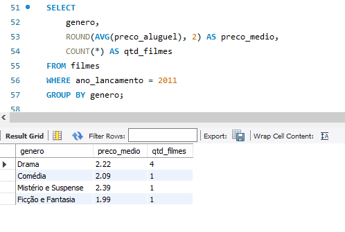
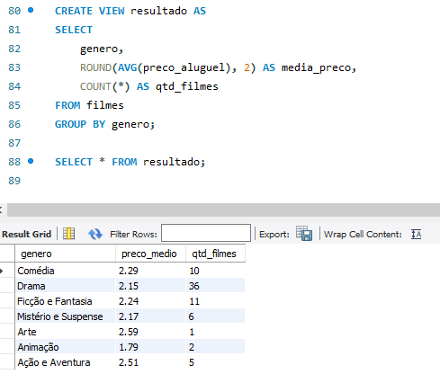

Análise de Dados em SQL de Aluguel de Filmes
Projeto de SQL, desenvolvido para analisar dados de uma empresa de aluguel de filmes
Projeto
Neste projeto, realizei uma análise detalhada de dados para uma empresa de aluguel de filmes utilizando SQL, com foco em otimização de consultas e interpretação de dados por meio de técnicas avançadas. As principais etapas incluem:
- Agrupamentos: Utilizei a cláusula GROUP BY para calcular o preço médio de aluguel dos filmes, segmentando por diferentes categorias e permitindo uma visão precisa sobre o comportamento dos preços na plataforma de aluguel.
- Filtragem em Agrupamentos: Aprofundei a análise utilizando a cláusula HAVING para filtrar resultados agregados. Em uma análise adicional, refinei os dados filtrando apenas os filmes lançados no ano de 2011, o que permitiu um olhar mais focado sobre essa camada temporal específica.
- Subqueries: Desenvolvi subqueries para realizar análises mais complexas. Por exemplo, ao identificar os aluguéis com notas acima da média, utilizei a função de agregação AVG() para calcular a média das notas e, em seguida, apliquei uma subquery para filtrar os aluguéis com notas superiores a esse valor.
- Criação de Views: Para otimizar o acesso aos dados mais utilizados, criei views no banco de dados. Uma das views foi desenvolvida para armazenar e reutilizar resultados de consultas que agregam o preço médio de aluguel e a contagem de filmes por gênero, utilizando CREATE VIEW. Essa abordagem melhorou o desempenho e a escalabilidade da análise.
Tecnologias Utilizadas:
- SQL (Structured Query Language)
- Funções de agregação: AVG(), COUNT(), ROUND()
- Agrupamentos e subqueries
- Criação de views com CREATE VIEW e DROP VIEW
Etapas do Projeto
Análise Inicial e Definição de Objetivos
O projeto teve início com uma análise preliminar dos dados disponíveis nas tabelas do banco, como as informações sobre os filmes, aluguéis, atores, clientes e suas respectivas relações. O objetivo principal era identificar padrões de comportamento no preço de aluguel e nas avaliações dos filmes.


Agrupamentos e Cálculos de Médias
A primeira etapa técnica consistiu em agrupar os dados e calcular métricas importantes, como o preço médio de aluguel dos filmes. Utilizando a cláusula GROUP BY, foi possível segmentar os filmes por gênero e calcular o preço médio de aluguel para cada categoria. Essa análise permitiu entender quais gêneros de filmes tendem a ter valores mais altos ou mais baixos em suas locações.


Após a análise inicial, a necessidade de uma análise mais específica surgiu. A segunda etapa envolveu a criação de filtros para segmentar os resultados. Através da cláusula HAVING, a análise foi refinada para considerar apenas os filmes lançados em 2011. Isso permitiu focar na performance de preços de aluguel de filmes em um ano específico e comparar essas informações com a média dos demais anos.
Uso de Subqueries para Análises Mais Complexas
Para aprofundar a análise, a terceira etapa envolveu o uso de subqueries. O objetivo foi identificar os aluguéis que receberam avaliações acima da média. Para isso, foi calculada a média das notas dos aluguéis utilizando a função AVG() e, em seguida, uma subquery foi usada para comparar as notas de cada aluguel com a média geral. Essa etapa permitiu identificar quais filmes estavam se destacando em termos de satisfação dos clientes.
A etapa final consistiu na criação de views, que são consultas pré-definidas armazenadas no banco de dados. A view criada armazenou o resultado da consulta que calculava o preço médio de aluguel e a quantidade de filmes por gênero. A utilização de views não só melhorou o desempenho das consultas subsequentes, como também facilitou o acesso e análise dos dados de forma reutilizável.
Essas etapas ajudaram a transformar grandes volumes de dados em informações acionáveis, otimizando o processo de análise e oferecendo uma base sólida para decisões mais estratégicas na empresa de aluguel de filmes.